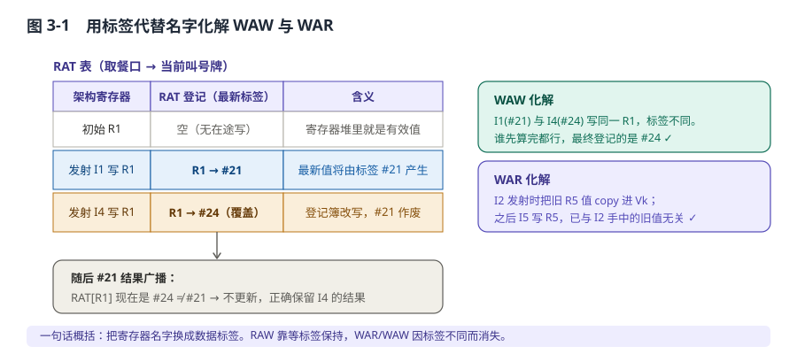
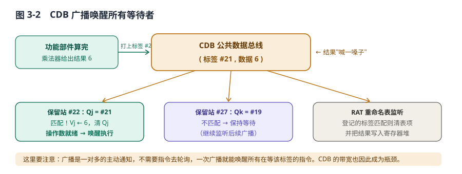
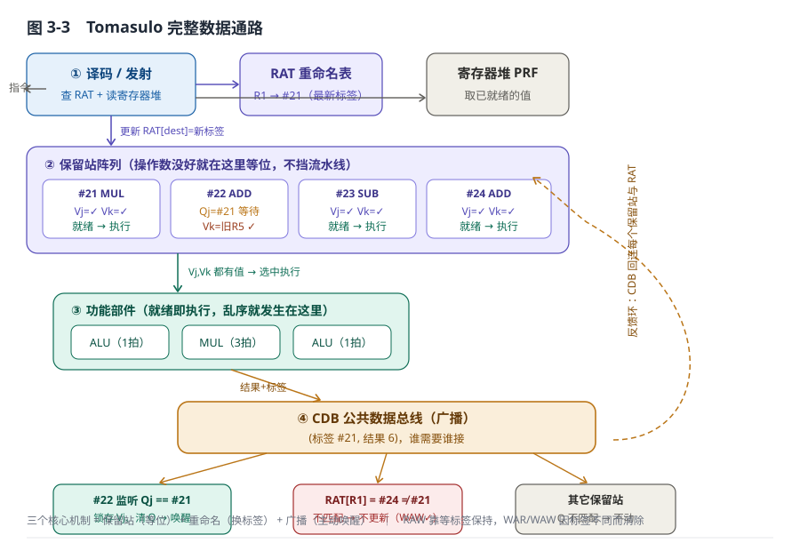
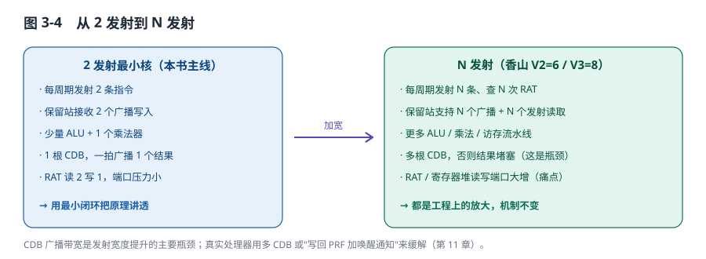

第 3 章 Tomasulo 乱序执行的最小闭环
本章导读 上一章我们看到，WAR 和 WAW 这类”伪相关”会让一条明明可以执行的指令白白等待。本章给出解决它们的经典答案——Tomasulo 算法。1967 年 IBM 360/91 的浮点部件首次用它解决了”浮点除法很慢、但后面的加法其实不用等它”的问题。后来的 Alpha、Intel P6 一直到香山，都沿用了这套基本思路。
学完本章，你应该能够： 1. 说清楚保留站、寄存器重命名、公共数据总线（CDB）各自解决什么问题； 2. 手工走通一段指令序列从发射到写回的全过程； 3. 读懂一个 2 发射乱序核最核心的数据通路； 4. 理解”广播为什么是瓶颈”，以及 2 发射如何扩展到 N 发射。
Tomasulo 这个名字听着唬人，其实没有引入新电路，只是把你已经熟悉的”流水线加转发”换了一种组织方式。
3.1 顺序流水线为什么会堵车
你设计过五级流水线，知道数据相关时可以用转发（forwarding）把结果直接从 EX 阶段送回输入端。转发很有效，但它有个前提：指令必须按顺序流过流水线。一旦某条指令卡住，后面所有指令都得跟着等——哪怕它们和这条指令毫无关系。
来看一段具体的整数指令序列（我们全书都用它当例子）：
I1: MUL R1, R2, R3 # 慢！假设 3 拍（乘法）
I2: ADD R4, R1, R5 # 真相关 RAW：要用 I1 的结果 R1
I3: SUB R6, R7, R8 # 完全独立，1 拍就好
I4: ADD R1, R9, R10 # 也写 R1 —— WAW，但和 I1 无关
I5: XOR R5, R11, R12 # 写 R5 —— WAR，I2 读的是旧的 R5在顺序流水线里会发生什么？
- I2 必须等 I1：这是 RAW，真相关，躲不掉。乘法 3 拍，I2 至少停 2 拍。
- I3 明明独立，却卡在 I2 后面：因为顺序发射，它眼睁睁看着 ALU 空着也不能用。这叫前端阻塞。
- I4 和 I1 都写 R1，顺序机器里必须保证 I4 的结果”最后留下”，于是它也得排队。
- I5 写 R5，但 I2 还要读 R5 的旧值。顺序机器靠停止 I5 来保证 I2 先读到旧值。
后两条其实很冤：I4 和 I1 写同一个寄存器，谁先算完谁后算完，只要最终 R1 里是 I4 的值就行；I5 写 R5 时，I2 早把旧 R5 取走了就相安无事。 它们不是真的依赖，只是”名字撞车”了。这就是上一章说的伪相关（WAR / WAW）。
本章要回答一个问题：能不能让指令只在操作数就绪时才执行，同时保证结果最终按程序顺序呈现？办法是三件事：保留站、重命名、广播。
3.2 Tomasulo 的三个核心思想
先把三个概念分别讲清楚，再拼成完整系统。这里用一个贯穿全书的比喻：
把执行单元想成厨师，指令想成订单，寄存器想成取餐口编号。
3.2.1 保留站让指令就地等待
顺序流水线里，指令在译码后如果操作数没就绪，就堵在流水线上，挡住后面所有人。
保留站（Reservation Station, RS）的做法是：译码阶段一出问题指令，先把它搬到一个小缓冲区（保留站）里待着，然后立刻空出流水线，让后面的指令继续进来。指令在保留站里盯着自己的操作数，一旦就绪就被送去执行。
这就像餐厅：点单后不是站在取餐口死等，而是拿个号去座位坐下，叫到号再取餐。流水线门口不再堵。
保留站的每一项通常存这些东西：
| 字段 | 含义 | 类比 |
|---|---|---|
Busy |
这一项是否被占用 | 座位是否有人 |
Op |
要做什么运算 | 订单内容 |
Vj / Vk |
操作数数据值（已就绪才有） | 手上已有的食材 |
Qj / Qk |
操作数在等哪个标签广播（未就绪） | 在等哪桌上菜 |
Dest |
结果要写到哪个标签/寄存器 | 取餐口编号 |
注意，V 和 Q 二选一。操作数要么已经有值（V），要么正在等人送（Q），这就记录了就绪还是未就绪。
3.2.2 寄存器重命名
重命名是消除伪相关的关键。想象一下：如果每条写寄存器的指令都拿到一个独一无二的标签，而读它的指令记下的是”我在等标签 #37”，而不是”我在等 R1”，会发生什么？
- WAW 消失：I1 和 I4 都写 R1，但它们拿到的是不同标签（比如 #21 和 #24）。“R1 的最新值来自谁”由一张重命名表（RAT）记录，后写的 I4 覆盖登记。谁先算完都无所谓，最终登记的是 I4。
- WAR 消失：I2 在发射时就把 R5 的当前值读走存进了自己的
Vk（因为那一刻 R5 的标签是空的，说明寄存器里就是有效值）。之后 I5 写 R5，改的是”R5 的最新标签”，和 I2 手里那份已经 copy 走的旧值无关。
重命名表（RAT, Register Alias Table）就是”取餐口 → 当前叫号牌”的对照表：
发射 I1 (MUL R1,...) 时： RAT[R1] = #21 （R1 的最新值将由标签 #21 产生）
发射 I4 (ADD R1,...) 时： RAT[R1] = #24 （覆盖！现在 R1 的最新值来自 #24）读寄存器时查这张表：表里空 → 直接取寄存器堆里的值；表里是标签 → 记下这个标签，等广播。

图 3-1 R1 被写两次时 RAT 标签的覆盖过程。I1 登记 #21，I4 覆盖为 #24，旧标签作废，WAW 随之化解。
一句话概括：把寄存器名字换成数据标签。RAW 靠等标签保持（真相关），WAR/WAW 因标签不同而消失（伪相关消除）。
3.2.3 CDB 广播
功能部件算完结果后，不写回某个固定的地方让别的指令去读，而是把 (标签, 结果值) 放到一根共享的公共数据总线（Common Data Bus, CDB）上，广播给所有人：
- 所有保留站都听着：如果我的
Qj或Qk等于广播的标签，就把结果锁存进Vj/Vk，并把对应的Q清空——我的操作数就绪了！ - 重命名表 RAT 也听着：如果哪一项登记的这个标签，就更新为”已就绪”，并把结果写入寄存器堆。
这一喊就唤醒了所有在等这个结果的指令，不需要它们轮询，也不需要专门的控制。CDB 就是把各个模块连起来的公共通路。
类比：厨师做好一道菜，不是在桌上留纸条，而是举起来喊”37 号好了！“——所有在等 37 号的客人同时响应。

图 3-2 结果打上标签放上 CDB，所有保留站同时监听。匹配的锁存数据并唤醒，不匹配的继续等待。
3.3 把三块拼起来（完整数据通路）
三块合起来就是下面这张图。请对照文字读图，也可以用配套的 Digital 文件（见 3.7）动手连一遍。

图 3-3 发射 → 保留站等位 → 就绪即执行 → CDB 广播 → 监听唤醒的完整闭环（SVG 矢量图，可编辑）。
读图时留意这几点（对应 Digital 文件里的连线）：
- 发射是单向的进：指令从左边进，查 RAT、读寄存器堆，带着
(V 或 Q)住进保留站；同时把RAT[dest]改成自己的标签。 - 执行是按需的取：只有
Qj、Qk都空（即两个操作数都在V里）的保留站项才”有资格”被送往功能部件。这个”挑谁能执行”的动作叫发射选择 / 唤醒-选择（第 10 章详述，本章先理解为”就绪就能上”）。 - 写回是广播的出：功能部件结果汇入 CDB，CDB 的连线回连到每一个保留站和 RAT——这就是图里那一圈”监听”的箭头。这条反馈环路是 Tomasulo 的关键。
Digital 里怎么表达”广播”：Digital 支持总线（多比特线束）和多路开关。把 CDB 画成一根带标签的总线，每个保留站的
Q比较器挂在总线上；匹配信号作为”写入使能”。配套文件code/digital/03_tag_match_wakeup.dig搭出了这个比较器（1 位相等检测，match即唤醒信号），建议边看边仿真——把CDB_tag和Qj拨成相同，match就会亮起，这就是唤醒信号。
3.4 逐周期走一遍（本章重点）
原理讲完了，现在把 3.1 那段指令序列逐周期走一遍。走完之后，抽象的机制就具体了。为简化，假设每周期发射 1 条（2 发射的扩展放在 3.5），功能部件有独立的 ALU 和乘法器，乘法 3 拍、ALU 1 拍。
初始状态：RAT 全空（所有寄存器的值都在寄存器堆里且有效），所有保留站空闲。
周期 1 发射 I1 MUL R1, R2, R3
- 读 RAT[R2]、RAT[R3]：都空 → 从寄存器堆取值，设
Vj=R2值, Vk=R3值。 - 分配保留站 #21，
Op=MUL，Dest=R1。 - 更新 RAT[R1] = #21。
- I1 两个操作数都就绪 → 送往乘法器开始执行。
周期 2 发射 I2 ADD R4, R1, R5
- 读 RAT[R1] = #21（非空！R1 的最新值还没出来）→
Qj = #21，Vj无效。 - 读 RAT[R5] = 空 → 从寄存器堆取旧 R5 值，设
Vk = R5旧值。（← WAR 在这里就被化解了：I2 把旧值 copy 走了） - 分配保留站 #22，
Op=ADD，Dest=R4，更新RAT[R4]=#22。 Qj非空 → I2 留在保留站等待，不堵流水线。
周期 3 发射 I3 SUB R6, R7, R8
- R7、R8 的 RAT 都空 →
Vj, Vk取到值。分配 #23，Dest=R6，RAT[R6]=#23。 - 操作数就绪 → 送往空闲 ALU 执行。I3 越过了还在等的 I2，这就是乱序。
周期 4 发射 I4 ADD R1, R9, R10
- R9、R10 都空 →
Vj, Vk就绪。分配 #24，Dest=R1。 - 更新 RAT[R1] = #24，覆盖之前的 #21。（← WAW 在这里被化解了：登记簿上 R1 的最新值现在归 #24）
- 操作数就绪 → 执行。注意：此时 I1 的乘法可能还没算完，但 I4 不用等它。
周期 5 发射 I5 XOR R5, R11, R12
- R11、R12 都空 → 就绪。分配 #25，
Dest=R5，RAT[R5]=#25。 - 执行。此时 I2 手里的
Vk是旧的 R5 值，I5 改 R5 不影响它，WAR 伪相关就是这样消除的。
周期 6 及以后 广播唤醒
假设 I1 的乘法在周期 6 完成，把 (#21, 结果值) 放上 CDB：
- 保留站 #22（I2）监听：我的
Qj == #21！→ 把结果锁存进Vj，清Qj。I2 的Vj、Vk现在都有值了 → 被唤醒，送往 ALU 执行。 - RAT 监听：RAT[R1] 现在是 #24，不是 #21 → 不更新。（I1 的结果被 I4 “覆盖”了，正确！）
随后 I4、I5、I3 的结果也陆续上 CDB，唤醒等待它们的指令并写回寄存器堆。所有指令最终完成。
一张表看懂全过程
| 指令 | 分配标签 | 源操作数来源 | 化解的相关 | 何时能执行 |
|---|---|---|---|---|
| I1 MUL R1,R2,R3 | #21 | R2,R3 直接取值 | — | 周期 1 立即 |
| I2 ADD R4,R1,R5 | #22 | R1 等 #21；R5 取旧值 | WAR（旧 R5 已 copy） | 等 #21 广播后 |
| I3 SUB R6,R7,R8 | #23 | R7,R8 直接取值 | — | 周期 3 立即（超越 I2） |
| I4 ADD R1,R9,R10 | #24 | R9,R10 直接取值 | WAW（RAT[R1] 被覆盖为 #24） | 周期 4 立即 |
| I5 XOR R5,R11,R12 | #25 | R11,R12 直接取值 | WAR（不碰 I2 的旧值） | 周期 5 立即 |
想一想：RAW（I2 等 I1）并没有被消除，只是变成了等标签。因为 I2 真的需要 I1 算出的那个数，这是真实的数据依赖，绕不过去。Tomasulo 消除的只是假依赖（WAR/WAW）。
3.5 重点提炼与关键权衡
把本章的结论整理一下：
重点 1 收益来自三个解耦
- 指令与流水线解耦（保留站）：操作数没好就去旁边等，不挡路。
- 名字与数据解耦（重命名）：寄存器名只是标签，真数据跟着标签走。
- 生产与消费解耦（广播）：结果一出来主动通知所有等待者。
重点 2 CDB 是吞吐量的瓶颈
所有功能部件的结果都要挤上一根（或少数几根）CDB。同一周期只能广播有限个结果。这就是为什么真实处理器会用多条 CDB、或把结果先写回 PRF 再靠”唤醒”通知（第 11 章）。问自己：如果 2 发射每周期产生 2 个结果，一根 CDB 够吗？
重点 3 从 2 发射扩展到 N 发射

图 3-4 2 发射最小核与 N 发射的对照。机制不变，各部件同步加宽，CDB 带宽是主要瓶颈。
| 部件 | 2 发射 → N 发射的扩展 |
|---|---|
| 发射逻辑 | 每周期读 N 条指令、查 N 次 RAT、分配 N 个保留站项 |
| 保留站 | 端口数增加：要能同时接收 N 个广播写入、N 个发射读取 |
| 功能部件 | 更多 ALU / 乘法器 |
| CDB | 需要更多广播带宽，否则结果堵塞 |
| RAT / 寄存器堆 | 读写端口数随发射宽度增长（这是物理实现的痛点） |
机制不变，只是路口变宽。这也是先把 2 发射闭环讲透的原因，N 发射只是在它上面加宽。
重点 4 本章留下的两个问题
- 上面的写回是”广播即写入寄存器堆”。但如果一条指令在写回后才发现异常怎么办？寄存器已经被改脏了。第 13 章的 ROB + 按序提交解决它。
- 分支预测错了，保留站里一堆”在等”的指令怎么办？第 14 章的 checkpoint 恢复解决它。
现阶段先接受这个”不完美但能跑”的最小闭环，把直觉建立起来，后面再逐步补全。
3.6 从一条指令开始搭电路
这一节跟着一条指令从发射走到写回。每个模块都先看它对外要提供哪些端口，再看内部怎么实现。端口不是一次列全的，需要哪个就加哪个，你会看到每个信号都是被具体需求逼出来的。完整可运行版见 code/verilog/03_tomasulo/。
3.6.1 保留站条目
先看接口。
第一步，指令得能进来。 译码后的指令要占住一个保留站条目。占用要有使能 issue_en，还要把这条指令的信息一起送进来，包括操作码、两个操作数以及结果贴什么标签。
input wire issue_en,
input wire [3:0] op_in,
input wire vj_valid_in, vk_valid_in,
input wire [DATA_W-1:0] vj_in, vk_in,
input wire [TAG_W-1:0] qj_in, qk_in,
input wire [TAG_W-1:0] dest_tag_in,vj_valid_in 为 1 表示 vj_in 里已经是数值，为 0 表示 qj_in 里是它等待的标签。一个操作数用”值加标签”两种形式表示，是 Tomasulo 的关键约定。
第二步，结果要能监听 CDB。 等数据的条目得一直盯着总线，所以要有广播的有效位、标签和数值三个输入：
input wire cdb_valid,
input wire [TAG_W-1:0] cdb_tag,
input wire [DATA_W-1:0] cdb_data,第三步，操作数齐了要通知外面。 条目本身不做运算，它只在操作数到齐时拉高 ready，并把操作码和值送出去给功能部件：
output wire ready,
output wire [3:0] op_out,
output wire [DATA_W-1:0] vj_out, vk_out,再加上时钟，接口就完整了。
再看实现。
第四步，指令进来先记住三样东西。 待着的时候要记操作码、两个操作数的状态，以及自己的目的标签：
reg busy;
reg [3:0] op;
reg vj_valid, vk_valid;
reg [DATA_W-1:0] vj, vk;
reg [TAG_W-1:0] qj, qk;
reg [TAG_W-1:0] dest_tag;
assign ready = busy && vj_valid && vk_valid;ready 就是”两个操作数都到齐”，可以直接拿去启动功能部件。把等数据这件事从流水线上挪到这个小仓库，流水线门口就不再堵着。
第五步，结果回来怎么唤醒。 广播的标签和自己在等的标签一对上，就把值锁存下来，清掉等待标志：
if (cdb_valid && busy) begin
if (!vj_valid && qj == cdb_tag) begin
vj <= cdb_data;
vj_valid <= 1'b1;
end
if (!vk_valid && qk == cdb_tag) begin
vk <= cdb_data;
vk_valid <= 1'b1;
end
end两个 if 要并列写，不能合成一个。虽然一次广播只有一个标签，但两个操作数可能在等同一个标签，比如 ADD R1, R2, R2，两个源都是 R2，就得同时填上。
第六步，发射和广播撞在同一拍。 新指令要写入，旧结果同时广播回来，谁优先？让发射优先：
if (issue_en) begin
busy <= 1'b1;
op <= op_in;
dest_tag <= dest_tag_in;
vj_valid <= vj_valid_in; vk_valid <= vk_valid_in;
vj <= vj_in; vk <= vk_in;
qj <= qj_in; qk <= qk_in;
end else if (cdb_valid && busy) begin
// 上面那段广播监听
end新写入项的等待标签是刚分配的新标签，不可能等于这一拍广播的老标签，让它去响应没有意义。
完整代码。 端口就是上面定稿的那一份，内部是这三层逻辑拼起来：
module reservation_station #(
parameter TAG_W = 5, // 标签位宽：32 个项
parameter DATA_W = 32
)(
input wire clk,
input wire issue_en,
input wire [3:0] op_in,
input wire vj_valid_in, vk_valid_in,
input wire [DATA_W-1:0] vj_in, vk_in,
input wire [TAG_W-1:0] qj_in, qk_in,
input wire [TAG_W-1:0] dest_tag_in,
input wire cdb_valid,
input wire [TAG_W-1:0] cdb_tag,
input wire [DATA_W-1:0] cdb_data,
output wire ready,
output wire [3:0] op_out,
output wire [DATA_W-1:0] vj_out, vk_out
);
reg busy;
reg [3:0] op;
reg vj_valid, vk_valid;
reg [DATA_W-1:0] vj, vk;
reg [TAG_W-1:0] qj, qk;
reg [TAG_W-1:0] dest_tag;
assign ready = busy && vj_valid && vk_valid;
assign op_out = op;
assign vj_out = vj;
assign vk_out = vk;
always @(posedge clk) begin
if (issue_en) begin
busy <= 1'b1;
op <= op_in;
dest_tag <= dest_tag_in;
vj_valid <= vj_valid_in; vk_valid <= vk_valid_in;
vj <= vj_in; vk <= vk_in;
qj <= qj_in; qk <= qk_in;
end else if (cdb_valid && busy) begin
if (!vj_valid && qj == cdb_tag) begin
vj <= cdb_data;
vj_valid <= 1'b1;
end
if (!vk_valid && qk == cdb_tag) begin
vk <= cdb_data;
vk_valid <= 1'b1;
end
end
// 被功能部件取走后释放此项，完整版用握手信号实现
end
endmodule3.6.2 操作数里的标签是谁填的
先看接口。
第一步，发射时要查两个源寄存器。 源寄存器号 rs1、rs2 进来，查表后输出它们的等待标签 q1、q2 和有效位：
input wire [4:0] rs1, rs2,
output wire [TAG_W-1:0] q1, q2,
output wire q1_valid, q2_valid,第二步，发射时还要更新目的寄存器。 给 rd 分配一个新标签并登记，需要使能 rename_en 和新标签 new_tag：
input wire rename_en,
input wire [4:0] rd,
input wire [TAG_W-1:0] new_tag,第三步，结果写回时要清登记。 某个标签的结果出来后，要把登记着这个标签的表项标成有效，所以要监听 CDB：
input wire cdb_valid,
input wire [TAG_W-1:0] cdb_tag,加上时钟，接口齐了。
再看实现。
第四步，查表。 译码一条指令时读它的源寄存器。如果那个寄存器正有写入在途，就不能取寄存器堆里的旧值，而要记下产生新值的标签：
assign q1_valid = valid[rs1];
assign q1 = q1_valid ? tag_ram[rs1] : 0;valid[rs1] 为 1，表示”R1 的新值还在路上，正等着标签 tag_ram[rs1]“；为 0 就直接去寄存器堆取值。
第五步，两条指令写同一个寄存器。 这就是第 2 章说的 WAW。RAT 的办法很干脆，新指令一来直接覆盖登记：
if (rename_en) begin
valid[rd] <= 1'b1;
tag_ram[rd] <= new_tag;
end旧标签的结果广播回来时，tag_ram[rd] 里已经是新标签，匹配不上，自然不会误清。WAR 也不需要额外动作：读指令早把旧值的标签或数值记在自己保留站里了，后来者改写 RAT 影响不到它。
第六步，结果写回后清登记。 某个标签的结果一旦出来，所有登记着这个标签的寄存器都可以标记为有效值已在寄存器堆：
if (cdb_valid)
for (i = 0; i < NREG; i = i + 1)
if (valid[i] && tag_ram[i] == cdb_tag)
valid[i] <= 1'b0;一个 for 循环并行清掉所有匹配项，这就是”广播一次唤醒所有等待者”在 RAT 上的样子。
完整代码。 端口即定稿的接口，内部就是查表、覆盖、清除三件事：
module rat #(
parameter NREG = 32,
parameter TAG_W = 5
)(
input wire clk,
input wire [4:0] rs1, rs2,
output wire [TAG_W-1:0] q1, q2,
output wire q1_valid, q2_valid,
input wire rename_en,
input wire [4:0] rd,
input wire [TAG_W-1:0] new_tag,
input wire cdb_valid,
input wire [TAG_W-1:0] cdb_tag
);
localparam NREG_LAST = NREG - 1;
reg [TAG_W-1:0] tag_ram [0:NREG_LAST];
reg valid [0:NREG_LAST];
assign q1_valid = valid[rs1];
assign q2_valid = valid[rs2];
assign q1 = q1_valid ? tag_ram[rs1] : {TAG_W{1'b0}};
assign q2 = q2_valid ? tag_ram[rs2] : {TAG_W{1'b0}};
integer i;
always @(posedge clk) begin
if (rename_en) begin
valid[rd] <= 1'b1;
tag_ram[rd] <= new_tag;
end
if (cdb_valid)
for (i = 0; i < NREG; i = i + 1)
if (valid[i] && tag_ram[i] == cdb_tag)
valid[i] <= 1'b0;
end
endmodule动手提示：存储器取名
tag_ram，数组上界先转成localparam。在 Icarus Verilog 里table是保留字，数组上界也不能直接写[0:NREG-1]。配套文件code/verilog/03_tomasulo/rat.v还加了复位，并让写回优先于重命名，读者可以对照着看。
3.6.3 一根总线一次只能过一个结果
先看接口。
第一步，N 个功能部件要请求广播。 每个部件给一个请求位，外加它要广播的标签和数值：
input wire [N-1:0] req,
input wire [N-1:0][TAG_W-1:0] req_tag,
input wire [N-1:0][DATA_W-1:0] req_data,第二步，裁决结果送上一根总线。 仲裁器从 N 路里选一路，输出有效位、标签和数值：
output reg cdb_valid,
output reg [TAG_W-1:0] cdb_tag,
output reg [DATA_W-1:0] cdb_data这个模块是纯组合逻辑，不需要时钟。
再看实现。
第三步，多个结果同时回来。 乘法器、加法器、访存部件可能在同一拍都算完，都要上 CDB。但总线只有一根，一次只能过一个标签和一个值，所以要仲裁：
for (k = 0; k < N; k = k + 1)
if (req[k]) begin // 第一个请求者优先
cdb_valid = 1'b1;
cdb_tag = req_tag[k];
cdb_data = req_data[k];
break;
end优先级的选法很随意，这里的规则是编号小的先走。真正要紧的是看清这个模块的代价：N 个部件要广播，一拍只放行一个，这正是 3.5 说的广播瓶颈。想提高发射宽度，就得增加 CDB 条数，或者让不同部件的结果走不同通路。
完整代码。 端口就是前面那两组，内部一个带 break 的循环：
module cdb_arbiter #(
parameter N = 4,
parameter TAG_W = 5,
parameter DATA_W = 32
)(
input wire [N-1:0] req,
input wire [N-1:0][TAG_W-1:0] req_tag,
input wire [N-1:0][DATA_W-1:0] req_data,
output reg cdb_valid,
output reg [TAG_W-1:0] cdb_tag,
output reg [DATA_W-1:0] cdb_data
);
integer k;
always @(*) begin
cdb_valid = 1'b0; cdb_tag = 0; cdb_data = 0;
for (k = 0; k < N; k = k + 1) begin
if (req[k]) begin
cdb_valid = 1'b1;
cdb_tag = req_tag[k];
cdb_data = req_data[k];
break;
end
end
end
endmodule3.7 配套 Digital 文件与实验
本书的数字逻辑图用 Digital 绘制（开源、免费）。本章配套文件：
| 文件 | 格式 | 内容 | 用法 |
|---|---|---|---|
figures/fig3-3-datapath.svg |
SVG | 完整数据通路（发射→保留站→执行→广播→唤醒） | 对照 3.3 节读，可在矢量编辑器中修改 |
figures/fig3-1-rename.svg |
SVG | 重命名化解 WAW/WAR 的 RAT 覆盖过程 | 对照 3.2.2 节 |
figures/fig3-2-cdb-broadcast.svg |
SVG | CDB 广播唤醒机制 | 对照 3.2.3 节 |
figures/fig3-4-scale-to-n.svg |
SVG | 2 发射 → N 发射的扩展对照 | 对照 3.5 节 |
code/digital/03_tag_match_wakeup.dig |
Digital | 唤醒核心：标签相等检测器（1 位比较，match 即唤醒信号），自带测试向量 |
拨动 CDB_tag 与 Qj，观察 match；相等时亮起 |
code/verilog/03_tomasulo/ |
Verilog | RAT、保留站、CDB 仲裁的可综合实现 + 测试 | 见 3.6 节与下方 Verilog 实验 |
关于插图：本书所有结构图、流程图均为 SVG 矢量格式，存放在
figures/目录。SVG 是纯文本、可编辑的开放格式——用浏览器直接打开查看，用 Inkscape、Illustrator、VS Code 等均可修改文字、颜色和连线，缩放不失真。
Digital 的
.dig文件是 XML 格式，直接用 Digital 软件打开即可。03_tag_match_wakeup.dig内嵌了测试向量（Testcase），点击仿真即可看到”相等→match=1”。把 CDB 标签拨成和Qj一样，看到匹配信号亮起，就对应正文说的广播唤醒。完整系统连接用 3.3 节的分层图配合 Verilog 代码理解（Digital 适合表达局部机制，完整乱序核用 Verilog 更清晰，这也是本书图形化与代码分工的原则）。
本章实验
- 手算实验：把 3.4 的例子在纸上走一遍，画出每个周期 RAT 和三个保留站项的状态表。
- Digital 实验：在保留站演示里故意让 CDB 广播一个不匹配的标签，确认保留站不动作；再广播匹配标签，确认唤醒。
- Verilog 实验：给
rat写一个 testbench，发射两次写 R1（标签 #21、#24），然后广播 #21，检查 RAT[R1] 是否仍登记为 #24（验证 WAW 未被错误覆盖）。
3.8 香山一瞥（选读）
香山（昆明湖）的后端用的还是 Tomasulo 那套思路，只是做了三点工程调整，了解它们可以把本章知识和真实处理器对上号：
- 从”保留站里存数据”到”物理寄存器堆 PRF”：香山在重命名时直接分配一个物理寄存器（第 11 章的概念），指令发射后结果写进 PRF，保留站里只存”指向哪个物理寄存器”。这样避免了 CDB 广播数据时的大位宽连线，代价是要更大的寄存器堆和更复杂的回收逻辑。
- 唤醒与选择分拍优化：经典 Tomasulo 里”广播唤醒 + 就绪判断 + 选一个发射”可能挤在一拍里，时序紧张。香山把发射队列组织成分区结构，配合精心的流水线排布来缓解（第 10、12 章会讲思想）。
- 分散的发射队列与执行单元：整数、浮点、访存各有自己的发射队列和流水线，访存还进一步分成 load / store 地址 / store 数据三条（第 12 章）——本质都是”增加并行通路，减少互相等待”。
这些都不是新原理，只是围绕三个核心机制做加宽、加深、分块。把 2 发射闭环吃透，再看香山的代码就有了头绪。
3.9 本章小结
- 问题：顺序流水线里，真相关必须等，伪相关（WAR/WAW）却造成无谓停顿，独立指令也被堵住。
- 解法（三个核心机制）：
- 保留站让指令就地等待，不堵流水线；
- 寄存器重命名用标签代替名字，消除 WAR/WAW；
- CDB 广播让结果主动唤醒所有等待者。
- 边界：Tomasulo 只解伪相关，RAW 真相关仍须等待；本节的简单写回还不能处理精确异常和分支恢复（第 13、14 章补）。
- 扩展：2 发射 → N 发射是”加宽路口”，思想不变；CDB 带宽是主要瓶颈。
思考题
- 在 3.4 的例子里，如果把 I4 改成写 R6（而不是 R1），它和 I3 之间构成什么相关？Tomasulo 会怎么处理？（提示：I3 写 R6 在前）
- 为什么 RAT 里”标签为空”就可以直接从寄存器堆取值？需要什么前提保证此时寄存器堆里的值是最新的？
- 如果只有一根 CDB，但 2 发射每周期可能产生 2 个结果，会发生什么？系统里哪个部件最先感受到压力？
- 本章的保留站是”按标签广播唤醒”。如果改用”物理寄存器堆方案”（香山做法），保留站还需要存
Vj/Vk数据吗？为什么？（可先猜，第 11 章揭晓）
下一章：第 4 章 前端全景与解耦取指。后端已经能乱序执行了，前端怎么喂饱它？